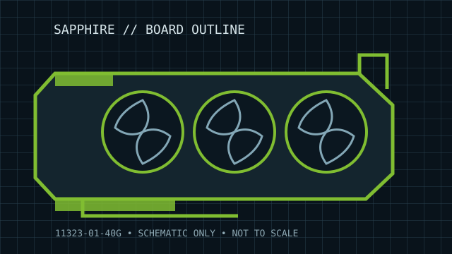

[ BOARD-PARTNER GRAPHICS // IDENTIFIED COMPONENT ]
Sapphire NITRO+ Radeon RX 7900 XT Vapor-X 20 GB
Navi 31 XT / RDNA 3 (2022). This record describes the named add-in-board variant and its published configuration, not every RX 7900 XTX/XT board. Verify its exact product label, revision and manufacturer document before installation or service.

MODEL / SKU: 11323-01-40G — NITRO+ Vapor-X 20G GDDR6. Board-partner clocks, PCB, cooling, output bracket and BIOS are distinct from AMD's reference design.
Recorded board specifications
| Cataloged board / exact SKU | SAPPHIRE NITRO+ Vapor-X 20G GDDR6; 11323-01-40G. |
|---|---|
| GPU / architecture / launch | Navi 31 XT / RDNA 3 (2022); Navi 31-family GPU. |
| GPU resources | 5,376 stream processors; product clocks are factory/BIOS-profile dependent and are intentionally not generalized across revisions. |
| Memory / bus | 20 GB GDDR6 at 20 Gb/s on a 320-bit interface (800 GB/s raw bandwidth); 80 MB Infinity Cache. |
| Host interface | PCI Express 4.0 x16 physical/electrical board interface. Link speed and lane operation depend on host, firmware, slot wiring and negotiated link. |
| Board power / auxiliary input | SAPPHIRE specifies 368 W board power for this NITRO+ Vapor-X configuration and three 8-pin PCIe connectors; follow the exact revision manual for PSU guidance. |
| Dimensions / cooler envelope | 320 × 136.75 × 71.6 mm (length × height × thickness), approximately 3.5-slot cooler. Allow additional chassis and cable clearance; dimensions are the partner listing, not a guarantee for every production revision. |
| Display outputs | 2 × HDMI 2.1 and 2 × DisplayPort 2.1. Output versions, simultaneous-display limits and supported modes depend on firmware, driver, cables and display. |
| Revision / fit caveat | SAPPHIRE product SKU 11323-01-40G. Verify exact suffix and PCB/cooler revision; dimensions include the listed cooler profile, while case clearance must include PCIe leads and airflow. |
Compatibility, service & revision notes
Check the model/SKU suffix and PCB or cooler revision against the card label before purchasing power leads, a replacement cooler or a firmware image. Fit is governed by measured card length, height, thickness, adjacent-slot obstruction, case structure and power-lead bend space—not by the slot count alone. Partner power limits and factory overclock profiles may differ from AMD reference specifications.
- Use the power connectors and PSU capacity in the exact partner manual; fully seat the plugs and do not adapt or force damaged connectors.
- Record serial/part labels, subsystem ID, BIOS switch position, driver version and physical condition. Do not flash a ROM unless it explicitly matches the board revision and subsystem.
- Confirm the supported OS/driver branch and display-output capability for the intended platform; link generation negotiates with the host but does not resolve firmware or power incompatibility.
Manufacturer & product sources
- SAPPHIRE NITRO+ Radeon RX 7900 XT Vapor-X product specificationsBoard-partner product/specification page for the identified family; verify the exact SKU suffix and any revision-specific downloads before service.
- AMD Radeon RX 7900 XT product specificationsAMD GPU-family/reference information for processor resources and baseline platform requirements; not a substitute for the named add-in-board specification.
Static archive record. Physical card label, current partner manual and revision-matched product page take precedence when they conflict with this summary.